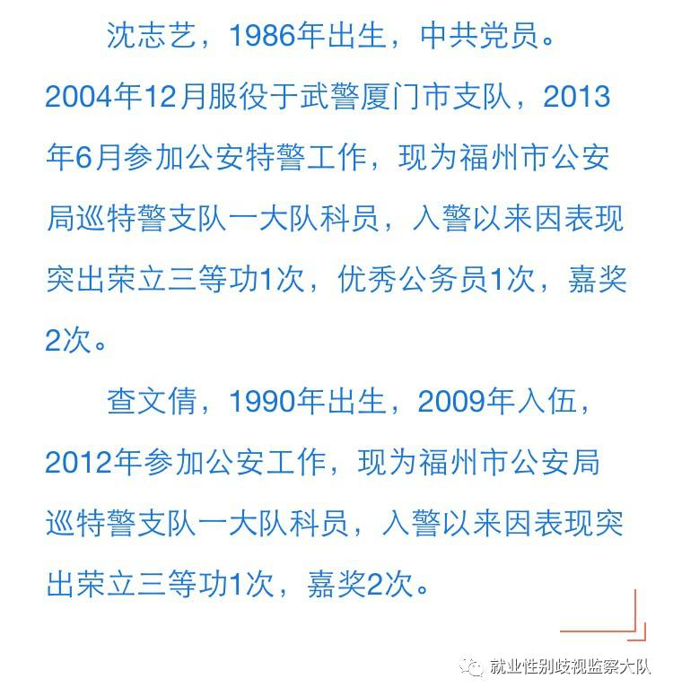
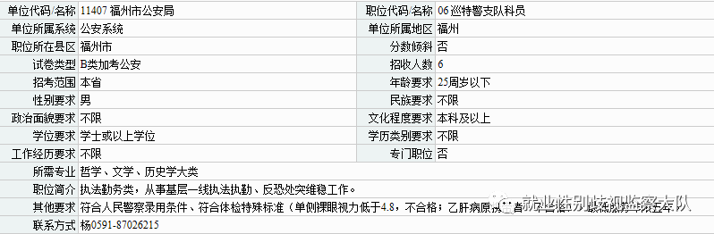
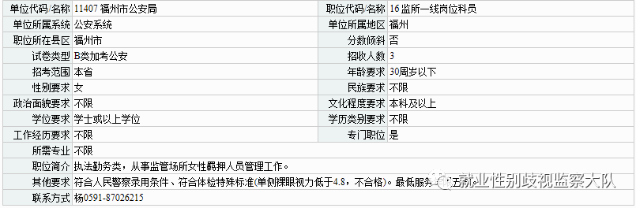

若干年后，你可能再也看不到这样的特警夫妇了！
今年3月4号，新浪微博为@福州公安 的公众号发布了一条消息，该市公安局 巡特警支队 双警察家庭 的一对夫妇在省委政法委、省妇联联合举办的评选活动中被授予了“十佳最美家庭”的称号。
据福州公安微信公众号3月2日发布的文章介绍，这对双警夫妇目前均供职于福州市公安局巡特警支队一大队，并且双方在工作岗位上都取得了突出的成绩。

熠熠警徽谱写青春赞歌，特警伉俪获奖实至名归。但是，大队今天收到了一个粉丝的举报：
在2017年的福建省公务员考试中，福州市公安局招聘男性69人，女性3人。
其中，招聘巡特警支队科员58人，性别要求均为男性。

仅限女性的岗位为监所一线岗位科员，负责从事监管场所女性羁押人员管理工作，需求为3人，其它岗位均要求为男性。

不仅福州市公安局招聘中存在性别歧视的违法行为，福建省公务员局招聘也涉嫌存在违法行为，其网上平台福建省公务员考试网站在性别要求一栏中给出了如下选项“仅不限”、“仅限男性”、“仅限女性”、“男性含不限”、“女性含不限”。其中“仅限男性”的岗位多达85页，共841条；“仅限女性”的岗位有29页，共281条，560个岗位歧视女性，这还是仅统计岗位未统计具体需求人数的情况。
举报人今年25岁，是能报巡特警的最后一年，然而不知道什么原因，福州市公安局17年要求“仅限男性”报考，这让她的梦想瞬间破灭。其实不止她，还有许多欣喜的等待招聘公告发布，却发现自己心仪的岗位早已写上了“仅限男性”的女性，那些笔试第一，远超第二名，却在面试中被神奇反超遗憾落榜的女性。
如果仅仅是个案，也许我会相信有些女性成绩好，但是不自信，所以分数低的理由。但是事实上近些年来对比国家公务员考试通知面试的名单和最终录取的名单后发现，许多岗位都完美的避开了性别女而选择了生理男。女性的名校光环，优秀履历都抵不过某些人脑中顽固的性别歧视。中共中央对外联络部通知17年面试的名单已于1月24日公布，不出意外3月底ta们就会公布最终的录取名单，敬请期待。
昨天的三八妇女节，主页君看到去年被怼的百度，今年在主页讨好女性，虽然百度地图招聘UI设计师涉嫌歧视女性的事件还在跟进中。
智联招聘发布了《2017中国女性职场现状调查报告》，揭露了超过81%的女性认为就业中存在性别歧视的现状。
@膨胀工作室BoomStudio 发布了8分钟唱完中国百年女权的视频，@新媒体女性 寻找“田园三八红旗手”，还有纪念女权五姐妹的文章。
正如@李思磐 所说“每一个你的批评抗议之声是有用的”，无论是围观、转发还是行动都可以产生能量。
支持女性就业，不吃瓜群众参考：
1.致电福州市公安局联系人询问今年不招聘女性的具体原因；
2.在福建省公务员考试网-网站留言中进行举报；
3.微博私信@共青团福建省委 @福建省劳动保障监察总队 @福州公安 @人民网福建频道等或者你喜欢的大V反映情况，说不定就碰上@薛之谦这样的神助攻了呢...
附上和举报人的对话截图，为她的行为点赞：

（图片均来源于网络，侵权删除）